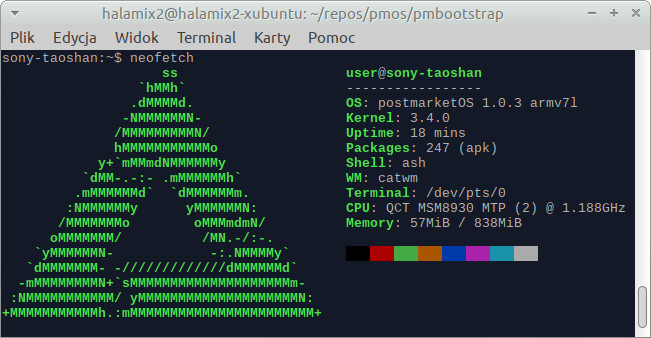

Sony Xperia L (sony-taoshan)
| This device is still running on armhf, although the processor supports armv7. If you own it, change it and test it that way. |
|
 Replacement image | |
| Manufacturer | Sony |
|---|---|
| Name | Xperia L |
| Codename | sony-taoshan |
| Released | 2013 |
| Category | testing |
| Original software | 4.1.2/4.2.2 |
| Hardware | |
| Chipset | Qualcomm MSM8230 Snapdragon S4 Plus |
| CPU | 1 GHz Dual-Core Krait |
| GPU | Adreno 305 |
| Display | 480x854 |
| Storage | 8 GiB |
| Memory | 1 GiB |
| Architecture | armv7 |
{kind=link}
| USB Networking |
Works
|
|---|---|
| Flashing |
Works
|
| Touchscreen |
Partial
|
| Display |
Partial
|
| WiFi | |
| FDE | |
| Mainline | |
| Battery | |
| 3D Acceleration | |
| Audio | |
| Bluetooth | |
| Camera | |
| GPS | |
| Mobile data | |
| SMS | |
| Calls | |
| USB OTG | |
| NFC | |
| Accelerometer | |
|---|---|
| Magnetometer | |
| Ambient Light | |
| Proximity | |
| Hall Effect | |
| Ir TX | |
|---|---|
| TrustZone | |
Contributors
Maintainer(s)
Users owning this device
What works
- Device boots
- Weston works
- SSH connections are possible.
How to enter flash mode
From LineageOS wiki: With the device powered off, hold Volume Up and connect the USB cable. The notification light should turn blue.
Current work
Kernel compilation
The kernel used comes from Lineage OS. The kernel version is 3.4.0.
The android_device_sony_taoshan github repository contains a file named lineage.dependencies witch indicates the name of the kernel used : android_kernel_sony_msm8930.
- XPeria L Github repository
- kernel Github repository
- Taoshan kernel configuration file on msm8930 Github repository
To satisfy pmbootstrap kernel config checking :
- disable CONFIG_ANDROID_PARANOID_NETWORK option
- enable CONFIG_DEVTMPFS option
- enable CONFIG_SYSVIPC option
The patch [gpu-msm-fix-gcc5-compile.patch] is necessary to fix the following error : undefined reference to kgsl_iommu_sync_lock.
The screen resolution must be updated in the device-sony-taoshan/deviceinfo file :
deviceinfo_screen_width="854" deviceinfo_screen_height="480"
XZ compression error
By default, the kernel compilation (pmbootstrap build linux-sony-taoshan) fails with the following error in the log :
AS arch/arm/boot/compressed/ashldi3.o /home/pmos/build/src/android_kernel_sony_msm8930-df6292bc628cece5925d0f67fbc8c8a2cab2d524/scripts/xz_wrap.sh: exec: line 23: xz: not found make[2]: *** [/home/pmos/build/src/android_kernel_sony_msm8930-df6292bc628cece5925d0f67fbc8c8a2cab2d524/arch/arm/boot/compressed/Makefile:190: arch/arm/boot/compressed/piggy.xzkern] Error 1 make[2]: *** Waiting for unfinished jobs.... make[1]: *** [/home/pmos/build/src/android_kernel_sony_msm8930-df6292bc628cece5925d0f67fbc8c8a2cab2d524/arch/arm/boot/Makefile:52: arch/arm/boot/compressed/vmlinux] Error 2 make: *** [/home/pmos/build/src/android_kernel_sony_msm8930-df6292bc628cece5925d0f67fbc8c8a2cab2d524/arch/arm/Makefile:292: zImage] Error 2 >>> ERROR: linux-sony-taoshan: build failed
Explanation : The kernel compilation needs the xz utility to build the kernel because the original taoshan kernel configuration file (from Lineage OS) has the CONFIG_KERNEL_XZ option enabled and pmbootstrap did not install this utility when installing the Alpine OS base.
The first solution is to add xz in the makedepends directive of the linux-sony-taoshan/APKBUILD file :
makedepends="perl sed installkernel bash gmp-dev bc linux-headers elfutils-dev devicepkg-dev xz"
Then you must clear all caches with pmboostrap zap and restart a new compilation.
The second solution is to choose another compression mode. To do that, run pmbootstrap kconfig edit sony-taoshan, go in the menu "General setup" and select GZIP for the "Kernel compression mode" option.
With this two methods, the kernel compilation is successfull, but the phone does not boot...
ARM_UNWIND support
To avoid "ftrace.h:51: multiple definition of `return_address'" errors, it's necessary to disable the stack unwinding support :
To do that, run pmbootstrap kconfig edit sony-taoshan, go in the menu "Kernel hacking" and uncheck the "Enable stack unwinding support " option.
Unpacking boot.img and non-standard warning
The Juisma's unmkbootimg utility prints a warning message indicating that the OFF_RAMDISK_ADDR is non-standard :
Boot = boot.img unmkbootimg version 1.2 - Mikael Q Kuisma <kuisma@ping.se> Kernel size 5847800 Kernel address 0x80208000 Ramdisk size 7421021 Ramdisk address 0x82200000 Secondary size 0 Secondary address 0x81100000 Kernel tags address 0x80200100 Flash page size 2048 Board name is "" Command line "console=ttyHSL0,115200,n8 androidboot.hardware=qcom androidboot.bootdevice=msm_sdcc.1 user_debug=31 msm_rtb.filter=0x3F ehci-hcd.park=3 maxcpus=2 buildvariant=userdebug" *** WARNING **** This image is built using NON-standard mkbootimg! OFF_RAMDISK_ADDR is 0x02000000 Please modify mkbootimg.c using the above values to build your image. **************** Extracting kernel to file zImage ... Extracting root filesystem to file initramfs.cpio.gz ... All done. ---------------source To recompile this image, use: mkbootimg --kernel zImage --ramdisk initramfs.cpio.gz --base 0x80200000 --cmdline 'console=ttyHSL0,115200,n8 androidboot.hardware=qcom androidboot.bootdevice=msm_sdcc.1 user_debug=31 msm_rtb.filter=0x3F ehci-hcd.park=3 maxcpus=2 buildvariant=userdebug' -o new_boot.img --------------- 24525 blocks
The Kuisma's unmkbootimg utility home page was not modified since 2015-12-07 : it seems to be out of date... And there is no way to download the source code to investigate...
As this warning is shown for both files (pmboostrap and Lineage), I think it can be ignored safely :
Lineage :
$ unzip ~/postmarket/taoshan/lineage-14.1-20180909-nightly-taoshan-signed.zip boot.img $ mv boot.img boot.img.lineage $ ./unmkbootimg boot.img.pmbootstrap | grep NON This image is built using NON-standard mkbootimg!
PmBootStrap :
$ cp /home/dom/.local/var/pmbootstrap/chroot_rootfs_sony-taoshan/boot/boot.img-sony-taoshan boot.img.pmbootstrap $ ./unmkbootimg boot.img.lineage | grep NON This image is built using NON-standard mkbootimg!
Motherboard
{kind=link}
The reference of the motherboard is 'sa77_GA-341'
Serial connector
{kind=link}
Presently, we have no idea where the UART pins (TX, RX and ground) are located. Maybe at the top left, under the 'D' letter...
Light blue is voltage when the phone is powered on.
Measured voltage on pin marked "strange" is weird:
- when voltmeter test leads touch this pad and ground (shield in my case) it shows varying 1.6V - 1.7V
- when measuring after boot OR taking voltmeter leads from the pad and touching it again it shows 0.0V
Small pad on bottom between ground and BATT_MID is 1.8V: after connecting it to TX and right after inserting the battery it sends similar string:
| Occasional 9 may be caused by transmission error, I was holding wires in hand |
(8888888988998898888888888888888888888988898898888898888888888898888888889888889888988888888888888988988889888888888888988988888889888888988888988888989888888898888888989888988888988898888888888888888B (8888888888988889888888898988888988888888888898888888889888888888898899888888889888888888888888988888888889898889888889888888988889988889889888888888898898988888888888888889889888988888888988888888988B (8988989888988888888888888898888898888888889988888988898888888888888889989888888988888998888898889889898988988888888898888888889888898888888888888988888888888888888888888888888888988888888888888889888B
Trying to use the Lineage OS prebuilt kernel
Reference : Using prebuilt kernels
Download the unpackbootimg utility :
$ wget https://storage.googleapis.com/google-code-archive-downloads/v2/code.google.com/android-serialport-api/android_bootimg_tools.tar.gz $ tar xf android_bootimg_tools.tar.gz
Xperia L is running Lineage OS and is connected to the computer with an USB cable.
Use adb to connect as root :
$ sudo adb root * daemon not running. starting it now on port 5037 * * daemon started successfully * restarting adbd as root $ adb shell taoshan:/ # whoami root
Find the boot partition (/dev/block/mmcblk0p24) :
taoshan:/ # ls -l /dev/block/platform/*/by-name/* | grep -i "\/boot" lrwxrwxrwx 1 root root 21 2018-10-26 16:56 /dev/block/platform/msm_sdcc.1/by-name/boot -> /dev/block/mmcblk0p24
Get the boot partition content :
taoshan:/ # cat /dev/block/mmcblk0p24 > /sdcard/boot_img_lineage_os.img taoshan:/ # chmod 666 /sdcard/boot_img_lineage_os.img taoshan:/ # exit
Download and extract to LineageOS boot partition :
$ adb pull /sdcard/boot_img_lineage_os.img . [100%] /sdcard/boot_img_lineage_os.img $ mkdir boot_img_lineage_os $ ./unpackbootimg -i boot_img_lineage_os.img -o boot_img_lineage_os dom@shangrao:~/postmarket/taoshan/temp$ ls boot_img_lineage_os | cat boot_img_lineage_os.img-base boot_img_lineage_os.img-cmdline boot_img_lineage_os.img-pagesize boot_img_lineage_os.img-ramdisk.gz boot_img_lineage_os.img-zImage
Build LineageOS :
$ pmbootstrap install
Restart smartphone in fastboot mode :
- turn the device off
- unplug the USB cable
- while pressing the volume up button, plug the USB cable
- check the led is blue
With the fastboott boot command, load LineageOS kernel and Postmarket ramdisk in the device memory :
$ sudo fastboot boot ./boot_img_lineage_os/boot_img_lineage_os.img-zImage ~/.local/var/pmbootstrap/chroot_rootfs_sony-taoshan/boot/initramfs-sony-taoshan creating boot image... creating boot image - 7084032 bytes downloading 'boot.img'... OKAY [ 0.220s] booting... OKAY [ 0.032s] finished. total time: 0.253s
After writing, the device tries to boot (message booting...), but nothing happens : the screen remains black and the led remains blue. A fastboot devices command shows no device connected : the device is frozzen.
After removing and replacing the battery, you can boot normally.
boot addresses
The official chipset of Xperia L is MSM8230 Snapdragon 400.
In the Lineage Github repository of the taoshan device, the PlatformConfig.mk indicates that the platform is msm8960 :
TARGET_BOARD_PLATFORM := msm8960
and the lineage.dependencies file indicates that the kernel github repository is android_kernel_sony_msm8930 :
"repository": "android_kernel_sony_msm8930", "target_path": "kernel/sony/msm8930
In the LineageOS msm8930 repository, the Makefile.boot file of the msm architecture indicates the same value ( 0x80208000) for the MSM8960 and the MSM8930 architectures :
zreladdr-$(CONFIG_ARCH_MSM8960) := 0x80208000 zreladdr-$(CONFIG_ARCH_MSM8930) := 0x80208000
Using the abootimg utility with the original Lineage OS boot.img file confirms this value :
$ abootimg -i ~/postmarket/taoshan/boot_img_lineage_os.img Android Boot Image Info: * file name = /home/dom/postmarket/taoshan/boot_img_lineage_os.img * image size = 19922944 bytes (19.00 MB) page size = 2048 bytes * Boot Name = "" * kernel size = 5847840 bytes (5.58 MB) ramdisk size = 7420948 bytes (7.08 MB) * load addresses: kernel: 0x80208000 ramdisk: 0x82200000 tags: 0x80200100 * cmdline = console=ttyHSL0,115200,n8 androidboot.hardware=qcom androidboot.bootdevice=msm_sdcc.1 user_debug=31 msm_rtb.filter=0x3F ehci-hcd.park=3 maxcpus=2 buildvariant=userdebug * id = 0x38f1134f 0xc038d148 0xe9283af8 0x00e68f16 0x910e8cf0 0x00000000 0x00000000 0x00000000
fastboot boot issue
After serveral tests with the fastboot boot command and different kernels, I was surprised to see the Samsung logo even with a Postmarket kernel. So I suspected the device to always reboots with the LineageOS kernel written on disk and not with the kernel I loaded in memory...
To check this, I erased the /boot partition (with fastboot erase boot) and I checked that the device could not start : effectively, screen stayed black and the red led was blinking every 5 seconds.
My next step was to use fastboot boot command to boot with original Lineage kernel and ramdisk. My best result was to send :
- --base 0x80200000
- --kernel-offset 0x00008000
- --ramdisk-offset 0x02000000
$ sudo fastboot boot --base 0x80200000 --kernel-offset 0x00008000 --ramdisk-offset 0x02000000 -c "console=ttyHSL0,115200,n8 androidboot.hardware=qcom androidboot.bootdevice=msm_sdcc.1 user_debug=31 msm_rtb.filter=0x3F ehci-hcd.park=3 maxcpus=2 buildvariant=userdebug" boot_img_lineage_os.img-zImage boot_img_lineage_os.img-ramdisk.gz creating boot image... creating boot image - 13273088 bytes downloading 'boot.img'... OKAY [ 0.411s] booting... OKAY [ 0.032s] finished. total time: 0.443s
Device restarted, but screen remained black and the red led was blinking every 5 seconds...*
Lineage OS boot.img recompression
Unpackaging and repackaging the LineageOS boot.img file creates a new file which is smaller (6Mo). This image can be booted normally.
LineageOS's boot.img extraction :
$ unpackbootimg -i boot_img_lineage_os.img -o boot_img_lineage_os BOARD_KERNEL_CMDLINE console=ttyHSL0,115200,n8 androidboot.hardware=qcom androidboot.bootdevice=msm_sdcc.1 user_debug=31 msm_rtb.filter=0x3F ehci-hcd.park=3 maxcpus=2 buildvariant=userdebug BOARD_KERNEL_BASE 80200000 BOARD_PAGE_SIZE 2048
New boot.img repackaging :
$ mkbootimg --base 0x80200000 --kernel_offset 0x00008000 --ramdisk_offset 0x02000000 --tags_offset 0x00000100 --pagesize 2048 --cmdline 'console=ttyHSL0,115200,n8 androidboot.hardware=qcom androidboot.bootdevice=msm_sdcc.1 user_debug=31 msm_rtb.filter=0x3F ehci-hcd.park=3 maxcpus=2 buildvariant=userdebug' --kernel boot_img_lineage_os/boot_img_lineage_os.img-zImage --ramdisk boot_img_lineage_os/boot_img_lineage_os.img-ramdisk.gz -o boot_img_lineage_os_recompress.img
Original and new boot.img files don't have the same size (6Mo) :
$ ls -lh boot_img_lineage_os_recompress.img boot_img_lineage_os.img -r--r--r-- 1 dom dom 19M oct. 26 16:13 boot_img_lineage_os.img -rw-r--r-- 1 dom dom 13M nov. 7 19:02 boot_img_lineage_os_recompress.img
New boot.img file flashing :
$ sudo fastboot flash boot ./boot_img_lineage_os_recompress.img target didn't report max-download-size sending 'boot' (12962 KB)... OKAY [ 0.411s] writing 'boot'... OKAY [ 0.899s] finished. total time: 1.309s
Device boots normally with this new image even if it's 6Mo smaller.
A binary comparison of the two files shows that a chunck of 6 Mo of null bytes was added at the end of the LineageOS boot.img file.
Starting LineageOS with PostMarket kernel
Booting LineageOS with a boot.img including a Postmarket's kernel works !
Create a boot.img including LineageOS ramdisk and the PostMarket kernel :
$ mkbootimg --base 0x80200000 --kernel_offset 0x00008000 --ramdisk_offset 0x02000000 --tags_offset 0x00000100 --pagesize 2048 --cmdline 'console=ttyHSL0,115200,n8 androidboot.hardware=qcom androidboot.bootdevice=msm_sdcc.1 user_debug=31 msm_rtb.filter=0x3F ehci-hcd.park=3 maxcpus=2 buildvariant=userdebug' --kernel ~/.local/var/pmbootstrap/chroot_rootfs_sony-taoshan/boot/vmlinuz-sony-taoshan --ramdisk boot_img_lineage_os/boot_img_lineage_os.img-ramdisk.gz -o boot_img_lineage_os_kernel_postmarket.img
Flash boot.img :
$ sudo fastboot flash boot boot_img_lineage_os_kernel_postmarket.img target didn't report max-download-size sending 'boot' (15430 KB)... OKAY [ 0.488s] writing 'boot'... OKAY [ 1.062s] finished. total time: 1.551s
Restart device and check with uname that the kernel is PostMarket kernel :
taoshan:/ $ uname -v #1-postmarketOS SMP PREEMPT Fri Nov 9 20:16:31 UTC 2018
Booting with Postmarket kernel and ramdisk
Booting device with Postmarket kernel and ramdisk seems not to work : device does not react at all when pressing power on button (screen stays black, led is off, no vibration). But we will see later that it's possible to do a telnet connection.
Create a boot.img file with Postmarket's Ramdisk and Kernel :
$ mkbootimg -base 0x80200000 --kernel_offset 0x00008000 --ramdisk_offset 0x02000000 --tags_offset 0x00000100 --pagesize 2048 --cmdline 'console=ttyHSL0,115200,n8 androidboot.hardware=qcom androidboot.bootdevice=msm_sdcc.1 user_debug=31 msm_rtb.filter=0x3F ehci-hcd.park=3 maxcpus=2 buildvariant=userdebug' --kernel ~/.local/var/pmbootstrap/chroot_rootfs_sony-taoshan/boot/vmlinuz-sony-taoshan --ramdisk ~/.local/var/pmbootstrap/chroot_rootfs_sony-taoshan/boot/initramfs-sony-taoshan -o boot_img_kernel_ramdisk_postmarket.img
Flash this file :
$ sudo fastboot flash boot boot_img_kernel_ramdisk_postmarket.img target didn't report max-download-size sending 'boot' (9422 KB)... OKAY [ 0.299s] writing 'boot'... OKAY [ 0.652s] finished. total time: 0.951s
Restart device :
dom@shangrao:~/postmarket/taoshan/temp$ sudo fastboot reboot rebooting... finished. total time: 0.051s
Nothing seems to happen when pressing the power on button (black screen, no vibration, led off).
Establishing a telnet connection with the debug-shell hook
With the debug-shell extension activated, it will be possible to do a telnet connection to the device from the computer.
Enable the debug-shell hook :
$ pmbootstrap initfs hook_add debug-shell [15:28:19] (rootfs_sony-taoshan) install postmarketos-mkinitfs-hook-debug-shell [15:28:27] (rootfs_sony-taoshan) mkinitfs sony-taoshan [15:28:32] NOTE: chroot is still active (use 'pmbootstrap shutdown' as necessary) [15:28:32] Done
Create a boot.img file with Postmarket's kernel and ramdisk :
$ mkbootimg --base 0x80200000 --kernel_offset 0x00008000 --ramdisk_offset 0x02000000 --tags_offset 0x00000100 --pagesize 2048 --cmdline 'console=ttyHSL0,115200,n8 androidboot.hardware=qcom androidboot.bootdevice=msm_sdcc.1 user_debug=31 msm_rtb.filter=0x3F ehci-hcd.park=3 maxcpus=2 buildvariant=userdebug' --kernel ~/.local/var/pmbootstrap/chroot_rootfs_sony-taoshan/boot/vmlinuz-sony-taoshan --ramdisk ~/.local/var/pmbootstrap/chroot_rootfs_sony-taoshan/boot/initramfs-sony-taoshan -o boot_img_kernel_ramdisk_postmarket.img
And flash it :
$ sudo fastboot flash boot boot_img_kernel_ramdisk_postmarket.img target didn't report max-download-size sending 'boot' (9422 KB)... OKAY [ 0.299s] writing 'boot'... OKAY [ 0.652s] finished. total time: 0.951s
Reboot device :
$ sudo fastboot reboot rebooting... finished. total time: 0.051s
Nothing happens : screen is black, led is off, no vibrations...
Check if a net device appears :
- disconnect USB cable
- display net device list :
$ ip link
1: lo: <LOOPBACK,UP,LOWER_UP> mtu 65536 qdisc noqueue state UNKNOWN mode DEFAULT group default qlen 1000
link/loopback 00:00:00:00:00:00 brd 00:00:00:00:00:00
2: enp2s0: <NO-CARRIER,BROADCAST,MULTICAST,UP> mtu 1500 qdisc pfifo_fast state DOWN mode DEFAULT group default qlen 1000
link/ether fc:aa:14:7d:67:0f brd ff:ff:ff:ff:ff:ff
3: wlp3s0: <BROADCAST,MULTICAST,UP,LOWER_UP> mtu 1500 qdisc mq state UP mode DORMANT group default qlen 1000
link/ether d8:fc:93:41:b9:41 brd ff:ff:ff:ff:ff:ff
- reconnect USB cable
- redisplay net device list :
1: lo: <LOOPBACK,UP,LOWER_UP> mtu 65536 qdisc noqueue state UNKNOWN mode DEFAULT group default qlen 1000
link/loopback 00:00:00:00:00:00 brd 00:00:00:00:00:00
2: enp2s0: <NO-CARRIER,BROADCAST,MULTICAST,UP> mtu 1500 qdisc pfifo_fast state DOWN mode DEFAULT group default qlen 1000
link/ether fc:aa:14:7d:67:0f brd ff:ff:ff:ff:ff:ff
3: wlp3s0: <BROADCAST,MULTICAST,UP,LOWER_UP> mtu 1500 qdisc mq state UP mode DORMANT group default qlen 1000
link/ether d8:fc:93:41:b9:41 brd ff:ff:ff:ff:ff:ff
7: enp0s20u4: <BROADCAST,MULTICAST,UP,LOWER_UP> mtu 1500 qdisc pfifo_fast state UNKNOWN mode DEFAULT group default qlen 1000
link/ether c2:c1:d3:ef:a3:25 brd ff:ff:ff:ff:ff:ff
A new device enp0s20u4 appeared with the mac address c2:c1:d3:ef:a3:25.
Give it the IP address 172.16.42.2 :
$ sudo ip address add dev enp0s20u4 172.16.42.2/24 RTNETLINK answers: File exists
And activate it :
$ sudo ip link set enp0s20u4 up
Check the local IP can be pinged :
$ ping -c1 172.16.42.2 PING 172.16.42.2 (172.16.42.2) 56(84) bytes of data. 64 bytes from 172.16.42.2: icmp_seq=1 ttl=64 time=0.021 ms --- 172.16.42.2 ping statistics --- 1 packets transmitted, 1 received, 0% packet loss, time 0ms rtt min/avg/max/mdev = 0.021/0.021/0.021/0.000 ms
Check that the phone responds at the address 172.16.42.1 :
$ ping -c1 172.16.42.1 PING 172.16.42.1 (172.16.42.1) 56(84) bytes of data. 64 bytes from 172.16.42.1: icmp_seq=1 ttl=64 time=0.286 ms --- 172.16.42.1 ping statistics --- 1 packets transmitted, 1 received, 0% packet loss, time 0ms rtt min/avg/max/mdev = 0.286/0.286/0.286/0.000 ms
Launch a telnet connection :
dom@shangrao:~/postmarket/taoshan/temp$ telnet 172.16.42.1 Trying 172.16.42.1... Connected to 172.16.42.1. Escape character is '^]'. Type 'pmos_continue_boot' to continue booting: / #
Device is up and running :-)
Screen remains black with LineageOS kernel and Postmarket ramdisk
Create a boot.img file with LineageOS kernel and Postmarket ramdisk :
$ mkbootimg --base 0x80200000 --kernel_offset 0x00008000 --ramdisk_offset 0x02000000 --tags_offset 0x00000100 --pagesize 2048 --cmdline 'console=ttyHSL0,115200,n8 androidboot.hardware=qcom androidboot.bootdevice=msm_sdcc.1 user_debug=31 msm_rtb.filter=0x3F ehci-hcd.park=3 maxcpus=2 buildvariant=userdebug' --kernel ./boot_img_lineage_os/boot_img_lineage_os.img-zImage --ramdisk ~/.local/var/pmbootstrap/chroot_rootfs_sony-taoshan/boot/initramfs-sony-taoshan -o boot_img_kernel_taoshan_ramdisk_postmarket.img
Flash this file and reboot :
$ sudo fastboot flash boot boot_img_kernel_taoshan_ramdisk_postmarket.img $ sudo fastboot reboot
Initialize USB net :
$ sudo ip address add dev enp0s20u4 172.16.42.2/24 $ sudo ip link set enp0s20u4 up
Start a telnet connection :
$ telnet 172.16.42.1 Trying 172.16.42.1... Connected to 172.16.42.1. Escape character is '^]'. Type 'pmos_continue_boot' to continue booting: / #
Check kernel is not Postmarket's kernel :
/ # uname -a Linux (none) 3.4.0-gdf6292b #1 SMP PREEMPT Sun Sep 9 08:11:30 UTC 2018 armv7l Linux
Try do display an image :
/ # . init_functions.sh / # show_splash /splash-loading.ppm.gz / #
Screen stays black / off...
With Postmarket ramdisk, device screen remains black (or off) (with Postmarket kernel or with LineageOS kernel). But with LineageOS ramdisk, kernel displays Samsung logo.
Is there something special in LineageOS ramdisk to initialize screen ?
Changing screen brightness
Sending this command changes the screen brightness (even if it remains black) :
# echo 255 > /sys/devices/platform/msm_ssbi.0/pm8038-core/pm8xxx-led/leds/wled/brightness
After sending the show_splash function, screen seems to display something white very briefly and then turns off with no luminosity :
/ # . init_functions.sh / # show_splash /splash-loading.ppm.gz
Brightness falls back to zero :
# cat /sys/devices/platform/msm_ssbi.0/pm8038-core/pm8xxx-led/leds/wled/brightness 0
Following lines appears at the end of dmesg :
[ 3628.406286] MIPI::mipi_dsi_panel_power: [ 3628.406347] mipi_dsi_samsung_panel_power: MIPI : 1 [ 3628.406439] mipi_dsi_samsung_panel_power(1): init=1 [ 3628.482343] mipi_samsung_lcd_on: MIPI init cmd start [ 3628.704623] mipi_samsung_lcd_on: MIPI init cmd end [ 3628.719944] mdp4_calc_req_mdp_clk: src_h is zero! [ 3628.749885] MIPI::mipi_dsi_panel_power: [ 3628.749946] mipi_dsi_samsung_panel_power: MIPI : 0 [ 3628.750068] mipi_dsi_samsung_panel_power(0): init=1
Adding logo.rle in ramdisk
With Postmarket ramdisk, dmesg complains about no finding logo.rle file :
[ 0.744208] load_565rle_image: Can not open /logo.rle
Copy the original LineageOS logo.rle file in taoshan's chroot FS :
$ sudo cp postmarket/taoshan/temp/boot_img_lineage_os/ramdisk/logo.rle /home/dom/.local/var/pmbootstrap/chroot_rootfs_sony-taoshan/logo.rle
Configure mkinitfs to add this file in ramdisk :
$ pmbootstrap chroot -r # cat /etc/postmarketos-mkinitfs/files/30-dOm-logo.files << EOF /logo.rle EOF # exit
Rebuild initfs :
$ pmbootstrap initfs build [19:15:22] (rootfs_sony-taoshan) mkinitfs sony-taoshan [19:15:26] NOTE: chroot is still active (use 'pmbootstrap shutdown' as necessary) [19:15:26] Done
Create a boot.img file with Postmarket kernel and ramdisk (including logo) :
$ mkbootimg --base 0x80200000 --kernel_offset 0x00008000 --ramdisk_offset 0x02000000 --tags_offset 0x00000100 --pagesize 2048 --cmdline 'console=ttyHSL0,115200,n8 androidboot.hardware=qcom androidboot.bootdevice=msm_sdcc.1 user_debug=31 msm_rtb.filter=0x3F ehci-hcd.park=3 maxcpus=2 buildvariant=userdebug' --kernel ~/.local/var/pmbootstrap/chroot_rootfs_sony-taoshan/boot/vmlinuz-sony-taoshan --ramdisk ~/.local/var/pmbootstrap/chroot_rootfs_sony-taoshan/boot/initramfs-sony-taoshan -o boot_img_kernel_ramdisk_postmarket_with_logo.img
Flash this file and reboot :
$ sudo fastboot flash boot boot_img_kernel_ramdisk_postmarket_with_logo.img $ sudo fastboot reboot
Sony logo (content of logo.rle) appears on screen !
Initialize USB net and check logo.rle file :
$ telnet 172.16.42.1 Trying 172.16.42.1... Connected to 172.16.42.1. Escape character is '^]'. Type 'pmos_continue_boot' to continue booting: / # ls -l /logo.rle -rw-r--r-- 1 0 0 7660 Nov 11 2018 /logo.rle
Try to display a splash screen :
/ # . init_functions.sh / # show_splash /splash-loading.ppm.gz / #
Nothing happens and screen continues to display Sony logo.
Manually updating fb mode updates screen
Reference :
- https://wiki.postmarketos.org/wiki/Troubleshooting#Newer_version_in_binary_package_repositories_than_in_aports_folder
- https://github.com/postmarketOS/pmbootstrap/pull/66
The following command updates screen :
/ # cat /sys/class/graphics/fb0/modes > /sys/class/graphics/fb0/mode
The content of modes file is :
/ # cat /sys/class/graphics/fb0/modes U:480x854p-0
So writing the string U:480x854p-0 in the mode file works too :
/ # echo "U:480x854p-0" > /sys/class/graphics/fb0/mode
By example, to display the loading splash :
/ # . init_functions.sh / # show_splash splash-loading.ppm.gz / # echo "U:480x854p-0" > /sys/class/graphics/fb0/mode / #
Calling only the show_splash function to display another splash screen does not work :
/ # show_splash splash-mounterror.ppm.gz
But, once you send the echo command, splash screen appears :
/ # echo "U:480x854p-0" > /sys/class/graphics/fb0/mode
Enabling msm-fb-refresher
As explained in Troubleshooting, msm-fb-refresher may help.
Add msm-fb-refresher in ~/.local/var/pmbootstrap/cache_git/pmaports/device/device-sony-taoshan/APKBUILD :
depends="postmarketos-base linux-sony-taoshan mkbootimg msm-fb-refresher mesa-dri-swrast"
Rebuild all :
$ pmbootstrap zap $ pmbootstrap checksum device-sony-taoshan $ pmbootstrap build device-sony-taoshan --force $ pmbootstrap install
Check msm-fb-refresher presence in ramdisk :
$ pmbootstrap initfs ls | grep refresher [17:44:36] *** initramfs *** -rwxr-xr-x 1 root root 5.2K Nov 12 17:44 msm-fb-refresher [17:44:36] *** initramfs-extra *** [17:44:37] See also: <https://wiki.postmarketos.org/wiki/Initramfs_development> [17:44:37] NOTE: chroot is still active (use 'pmbootstrap shutdown' as necessary) [17:44:37] Done
Flash and reboot :
$ pmbootstrap flasher flash_rootfs $ pmbootstrap flasher flash_kernel $ sudo fastboot reboot
Screen remains black but ping responds :
$ sudo ip address add dev enp0s20u4 172.16.42.2/24 $ sudo ip link set enp0s20u4 up $ ping 172.16.42.1 PING 172.16.42.1 (172.16.42.1) 56(84) bytes of data. 64 bytes from 172.16.42.1: icmp_seq=2 ttl=64 time=0.314 ms ^C
Telnet connection is not possible :
$ telnet 172.16.42.1 Trying 172.16.42.1... telnet: Unable to connect to remote host: Connection refused
But ssh connection is possible :
$ ssh 172.16.42.1 The authenticity of host '172.16.42.1 (172.16.42.1)' can't be established. ECDSA key fingerprint is SHA256:BlhEQYA2LoQZR8/zWztgoVdQYmTUtHB7JHU5w+sH+eY. Are you sure you want to continue connecting (yes/no)? yes Warning: Permanently added '172.16.42.1' (ECDSA) to the list of known hosts. dom@172.16.42.1's password: Welcome to postmarketOS!
Due to the zap command, debug-shell hook has been lost. Reenabled it, flash and reboot :
$ pmbootstrap initfs hook_add debug-shell $ pmbootstrap flasher flash_kernel $ sudo fastboot reboot
Screen remains black while booting. Telnet connection is possible :
$ telnet 172.16.42.1 Trying 172.16.42.1... Connected to 172.16.42.1. Escape character is '^]'. Type 'pmos_continue_boot' to continue booting:
msm-fb-refresher is running :
/ # ps -ef | grep msm-fb-refreshe[r] 275 0 0:00 /usr/sbin/msm-fb-refresher --loop
After increasing screen luminosity, a splash screen appears :
/ # echo 255 > /sys/devices/platform/msm_ssbi.0/pm8038-core/pm8xxx-led/leds/wled/brightness
Loading another splash screen is immediately displayed :
/ # . init_functions.sh / # show_splash /splash-loading.ppm.gz
Conclusion : msm-fb-refresher does it's job, but manually setting screen brightness in startup screen seems to be necessary.
Boot process hangs when exiting telnet debug-shell
When exiting the debug-shell with pmos_continue_boot, the boot process hangs and sshd daemon never starts.
To follow the boot process after launching the pmos_continue_boot command, I will launch a second telnetd daemon listening on another port and connect to it to follow the content of pmOS_init.log.
To start a daemon in background, we need to add nohup in the initramfs :
$ pmbootstrap chroot --rootfs / # cat /etc/postmarketos-mkinitfs/files/10-nohup.files /usr/bin/nohup EOF / # exit $ pmbootstrap initfs build $ pmbootstrap flasher flash_kernel $ sudo fastboot reboot
Start a second daemon :
$ telnet 172.16.42.1 / # nohup telnetd -b 172.16.42.1:2323 -l /bin/sh
With a second terminal window, connect to it and prints log :
$ telnet 172.16.42.1 2323 Trying 172.16.42.1... Connected to 172.16.42.1. Escape character is '^]'. / # tail -f pmOS_init.log
After exiting from the first telnet connection with pmos_continue_boot, the log prints :
Terminated
Mount boot partition (/dev/dm-0)
Extract /boot/initramfs-sony-taoshan-extra
25124 blocks
[INFO] charging-sdl version 0.1.0
Device /dev/input/event1 not suitable.
commandline read: charging-sdl
commandline read: -pcf
commandline read: /usr/share/fonts/ttf-dejavu/DejaVuSans.ttf
(*) Direct/Thread: Started 'SigHandler' (768) [CRITICAL - OTHER/0] <85340>...
~~~~~~~~~~~~~~~~~~~~~~~~~| DirectFB 1.7.7 |~~~~~~~~~~~~~~~~~~~~~~~~~~
(c) 2012-2015 DirectFB integrated media GmbH
(c) 2001-2015 The world wide DirectFB Open Source Community
(c) 2000-2004 Convergence (integrated media) GmbH
----------------------------------------------------------------
(*) DirectFB/Core: Single Application Core. (2017-10-03 12:19)
Device /dev/input/event5 not suitable.
(*) Direct/Memcpy: Using libc memcpy()
(*) Direct/Thread: Started 'Fusion Dispatch' (769) [MESSAGING - OTHER/0] <85340>...
Device /dev/input/event6 not suitable.
(*) Direct/Thread: Started 'VT Switcher' (772) [CRITICAL - OTHER/0] <85340>...
(*) Direct/Thread: Started 'VT Flusher' (773) [DEFAULT - OTHER/0] <85340>...
(*) DirectFB/FBDev: Found 'msmfb43_90501' (ID 0) with frame buffer at 0x82334000, 4812k (MMIO 0x00000000, 0k)
(*) Direct/Modules: suppress module 'linux_input'
Device /dev/input/event0 not suitable.
(*) Direct/Thread: Started 'Keyboard Input' (774) [INPUT - OTHER/0] <85340>...
(*) DirectFB/Input: Keyboard 0.9 (directfb.org)
(*) DirectFB/Input: Hot-plug detection enabled with Input Hub Driver
(*) Direct/Thread: Started 'PS/2 Input' (775) [INPUT - OTHER/0] <85340>...
(*) DirectFB/Input: IMPS/2 Mouse (1) 1.0 (directfb.org)
(*) Direct/Thread: Started 'PS/2 Input' (776) [INPUT - OTHER/0] <85340>...
(*) DirectFB/Input: IMPS/2 Mouse (2) 1.0 (directfb.org)
(*) DirectFB/Graphics: Generic Software Rasterizer 0.7 (directfb.org)
(!) DirectFB/FBDev: No supported modes found in /etc/fb.modes and current mode not supported!
(!) DirectFB/FBDev: Current mode's pixelformat: rgba 8/24, 8/16, 8/8, 8/0 (32bit)
(!) DirectFB/Core/layers: Failed to initialize layer 0!
--> A general initialization error occured
(!) DirectFB/Core: Could not initialize 'layer_core' core!
--> A general initialization error occured
Segmentation fault
Executing the start_charging_mode from debug-shell prints the same error :
/# . init_functions.sh
/ # start_charging_mode
[...]
(*) DirectFB/Graphics: Generic Software Rasterizer 0.7 (directfb.org)
(!) DirectFB/FBDev: No supported modes found in /etc/fb.modes and current mode not supported!
(!) DirectFB/FBDev: Current mode's pixelformat: rgba 8/24, 8/16, 8/8, 8/0 (32bit)
(!) DirectFB/Core/layers: Failed to initialize layer 0!(!) DirectFB/Core: Could not initialize 'layer_core' core!
--> A general initialization error occured
Segmentation fault
After disabling this function, the boot process terminates, and sshd daemon is started.
Source of the start_charging_mode function :
start_charging_mode(){
# Check cmdline for charging mode
chargingmodes="
androidboot.mode=charger
lpm_boot=1
androidboot.huawei_type=oem_rtc
startup=0x00010004
lpcharge=1
androidboot.bootchg=true
"
# shellcheck disable=SC2086
grep -Eq "$(echo $chargingmodes | tr ' ' '|')" /proc/cmdline || return
setup_directfb_tslib
# Get the font from osk-sdl config
fontpath=$(awk '/^keyboard-font/{print $3}' /etc/osk.conf)
# Set up triggerhappy config
{
echo "KEY_POWER 1 pgrep -x charging-sdl || charging-sdl -pcf $fontpath"
} >/etc/triggerhappy.conf
# Start it once and then start triggerhappy
(
charging-sdl -pcf "$fontpath" \
|| show_splash /splash-charging-error.ppm.gz
) &
thd --deviceglob /dev/input/event* --triggers /etc/triggerhappy.conf
}
There are two issues with DirectFB :
- The No supported modes found in /etc/fb.modes error : generate this file with the appropriate mode.
- The final segmentation fault : try to generate a core dump and anlayze it.
charging-sdl segmentation fault analyzing
The idea is to generate the segmentation fault from gdb to examine backtrace.
To include gdb, add it in the depends directive of ~/.local/var/pmbootstrap/cache_git/pmaports/device/device-sony-taoshan/APKBUILD :
depends="postmarketos-base linux-sony-taoshan mkbootimg msm-fb-refresher mesa-dri-swrast gdb"
Remove debug-shell :
$ pmbootstrap initfs hook_del debug-shell
Rebuild rootfs and flash it :
$ pmbootstrap build --force device-sony-taoshan $ pmbootstrap install $ pmbootstrap flasher flash_rootfs $ pmbootstrap flasher flash_kernel
After rebooting phone, enable USB networking and connect with ssh.
$ sudo ip address add dev enp0s20u4 172.16.42.2/24 $ sudo ip link set enp0s20u4 up $ ssh 172.16.42.1
Once connected, change root :
$ sudo su - [sudo] password for dom:
To generate the segmentation fault :
sony-taoshan:~# export DFBARGS="system=fbdev,no-cursor,disable-module=linux_input"
sony-taoshan:~# echo "KEY_POWER 1 pgrep -x charging-sdl || charging-sdl -pcf $fontpath" > /etc/triggerhappy.conf
sony-taoshan:~# charging-sdl -pcf /usr/share/fonts/ttf-dejavu/DejaVuSans.ttf
[INFO] charging-sdl version 0.1.0
[...]
--> A general initialization error occured
Segmentation fault
sony-taoshan:~#
To generate this seg fault from gdb, launch it like this :
sony-taoshan:~# gdb --args /usr/bin/charging-sdl -pcf /usr/share/fonts/ttf-dejavu/DejaVuSans.ttf GNU gdb (GDB) 8.0.1 [...] Reading symbols from /usr/bin/charging-sdl...done. (gdb)
Start charging-sdl execution :
(gdb) run
Starting program: /usr/bin/charging-sdl -pcf /usr/share/fonts/ttf-dejavu/DejaVuSans.ttf
[INFO] charging-sdl version 0.1.0
No protocol specified
commandline read: charging-sdl
commandline read: -pcf
commandline read: /usr/share/fonts/ttf-dejavu/DejaVuSans.ttf
[New LWP 1539]
(*) Direct/Thread: Started 'SigHandler' (1539) [CRITICAL - OTHER/0] <85340>...
~~~~~~~~~~~~~~~~~~~~~~~~~| DirectFB 1.7.7 |~~~~~~~~~~~~~~~~~~~~~~~~~~
(c) 2012-2015 DirectFB integrated media GmbH
(c) 2001-2015 The world wide DirectFB Open Source Community
(c) 2000-2004 Convergence (integrated media) GmbH
----------------------------------------------------------------
(*) DirectFB/Core: Single Application Core. (2017-10-03 12:19)
(*) Direct/Memcpy: Using libc memcpy()
[New LWP 1540]
(*) Direct/Thread: Started 'Fusion Dispatch' (1540) [MESSAGING - OTHER/0] <85340>...
[New LWP 1543]
(*) Direct/Thread: Started 'VT Switcher' (1543) [CRITICAL - OTHER/0] <85340>...
[New LWP 1544]
(*) Direct/Thread: Started 'VT Flusher' (1544) [DEFAULT - OTHER/0] <85340>...
(*) DirectFB/FBDev: Found 'msmfb43_90501' (ID 0) with frame buffer at 0x82334000, 4812k (MMIO 0x00000000, 0k)
(*) Direct/Modules: suppress module 'linux_input'
(*) DirectFB/Input: Hot-plug detection enabled with Input Hub Driver
[New LWP 1545]
(*) Direct/Thread: Started 'Keyboard Input' (1545) [INPUT - OTHER/0] <85340>...
(*) DirectFB/Input: Keyboard 0.9 (directfb.org)
[New LWP 1546]
(*) Direct/Thread: Started 'PS/2 Input' (1546) [INPUT - OTHER/0] <85340>...
(*) DirectFB/Input: IMPS/2 Mouse (1) 1.0 (directfb.org)
[New LWP 1547]
(*) Direct/Thread: Started 'PS/2 Input' (1547) [INPUT - OTHER/0] <85340>...
(*) DirectFB/Input: IMPS/2 Mouse (2) 1.0 (directfb.org)
(*) DirectFB/Graphics: Generic Software Rasterizer 0.7 (directfb.org)
(!) DirectFB/FBDev: No supported modes found in /etc/fb.modes and current mode not supported!
(!) DirectFB/FBDev: Current mode's pixelformat: rgba 8/24, 8/16, 8/8, 8/0 (32bit)
(!) DirectFB/Core/layers: Failed to initialize layer 0!
--> A general initialization error occured
(!) DirectFB/Core: Could not initialize 'layer_core' core!
--> A general initialization error occured
Thread 6 "Keyboard Input" received signal ?, Unknown signal.
[Switching to LWP 1545]
0xb6fb29a8 in __clone () from /lib/ld-musl-armhf.so.1
Seg fault comes from the thread Keyboard Input (LWP 1545) which receives a unknown signal.
Print backtrace complains about a corrupt stack :
(gdb) backtrace #0 0xb6fb29a8 in __clone () from /lib/ld-musl-armhf.so.1 #1 0xb6fb3668 in ?? () from /lib/ld-musl-armhf.so.1 Backtrace stopped: previous frame identical to this frame (corrupt stack?)
Error DirectFB/FBDev: No supported modes found
The error DirectFB/FBDev: No supported modes found in /etc/fb.modes and current mode not supported! is a known problem. See the Osk-sdl page:
- DirectFB/FBDev: No supported modes found in /etc/fb.modes and current mode not supported
- Create fb.modes
After creating the appropriate FB Mode in /etc/fb.modes, it should be possible to reactivate the start_charging_mode in init_functions.sh.
With debug-shell enabled, connect via telnet, and enlight screen by writing in the brightness file :
echo 255 > /sys/devices/platform/msm_ssbi.0/pm8038-core/pm8xxx-led/leds/wled/brightness
Create the /etc/fb.modes file :
cat > /etc/fb.modes << EOF
mode "480x854-0"
# D: 0.003 MHz, H: 0.004 kHz, V: 0.005 Hz
geometry 854 1708 854 1708 16
timings 400000000 50 50 9 9 20 4
accel false
rgba 8/24,8/16,8/8,8/0
endmode
EOF
Exit telnet :
/ # pmos_continue_boot
Screen becomes black. After few seconds, connect with ssh and enlight screen again :
sony-taoshan:~$ sudo su - [sudo] password for dom: sony-taoshan:~# echo 255 > /sys/devices/platform/msm_ssbi.0/pm8038-core/pm8xxx-led/leds/wled/brightness
The Wayland screen should appears.
Adding FB workarounds in APKBUILD
Go in the taoshan's device directory : ~/.local/var/pmbootstrap/cache_git/pmaports/device/device-sony-taoshan.
Create the fb.modes file :
mode "480x854-0"
# D: 0.003 MHz, H: 0.004 kHz, V: 0.005 Hz
geometry 854 1708 854 1708 16
timings 400000000 50 50 9 9 20 4
accel false
rgba 8/24,8/16,8/8,8/0
endmode
Create the screen_enlightener script :
#!/bin/sh
brightness_file=$(find /sys/devices/platform/msm_ssbi.0/ -name brightness | grep -v rgb | head -n1)
test -z "$brightness_file" && {
echo "Can't find screen brightness file !"
exit 1
}
echo "Screen brightness : $brightness_file"
test -w "$brightness_file" || {
echo "Can't find write screen brightness file !"
exit 1
}
while true ; do
test $(cat $brightness_file) -ne 255 && \
echo 255 > $brightness_file
sleep 1
done
Create a hook script named initfs-hook.sh which will be called during boot process to start the screen_enlightener script in background :
#!/bin/sh echo "Start the screen enlightener script" /bin/sh /usr/sbin/screen_enlightener >/tmp/screen_enlightener.log 2>&1 </dev/null &
Create a 50-screen-enlightener.files file which will include the screen_enlightener script in initramfs :
/usr/sbin/screen_enlightener
Update the APKBUILD :
- declare these files in the source variable
- add an install directive in the package function :
source="
deviceinfo
screen_enlightener
fb.modes
50-screen-enlightener.files
initfs-hook.sh
"
[...]
package() {
devicepkg_package $startdir $pkgname
install -Dm544 "$srcdir"/fb.modes "$pkgdir"/etc/fb.modes
install -Dm444 "$srcdir"/screen_enlightener "$pkgdir"/usr/sbin/screen_enlightener
install -Dm444 "$srcdir"/50-screen-enlightener.files "$pkgdir"/etc/postmarketos-mkinitfs/files/50-screen-enlightener.files
install -Dm644 "$srcdir"/initfs-hook.sh "$pkgdir"/etc/postmarketos-mkinitfs/hooks/00-${pkgname}.sh
}
It's not necessary to add an install directive for the fb.modes file : it's automatically in initramfs-extra.
Checksums (at the end of APKBUILD) need to be updated after adding new files :
$ pmbootstrap checksum device-sony-taoshan [13:02:46] (native) generate checksums for device-sony-taoshan [13:02:46] NOTE: chroot is still active (use 'pmbootstrap shutdown' as necessary) [13:02:46] Done
Rebuild all :
$ pmbootstrap build device-sony-taoshan --force $ pmbootstrap install
Check files presence in chroot :
$ pmbootstrap chroot -r [13:10:16] (rootfs_sony-taoshan) % sh -i / # ls -l /etc/fb.modes /usr/sbin/screen_enlightener /etc/postmarketos-mkinitfs/hooks/00-device-sony-taoshan.sh -r-xr--r-- 1 root root 185 Nov 17 17:44 /etc/fb.modes -rw-r--r-- 1 root root 137 Nov 17 17:44 /etc/postmarketos-mkinitfs/hooks/00-device-sony-taoshan.sh -r--r--r-- 1 root root 492 Nov 17 17:44 /usr/sbin/screen_enlightener / # cat /etc/postmarketos-mkinitfs/hooks/00-device-sony-taoshan.sh #!/bin/sh echo "Start the screen enlightener script" /bin/sh /usr/sbin/screen_enlightener >/tmp/screen_enlightener.log 2>&1 </dev/null & / # exit [13:10:28] NOTE: chroot is still active (use 'pmbootstrap shutdown' as necessary) [13:10:28] Done
Touch screen
Touch screen is /dev/input/event2
Installation
See also
- pmaports!71 Initial merge request
- Device package
- Kernel package